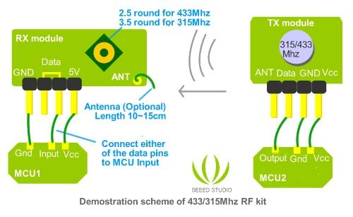

The kit is consisted of transmitter and receiver, popular used for remote control.
Model: WLS105B5B
http://www.seeedstudio.com/depot/images/product/3151.jpg
The popular link is like this: MCU -> Encoder -> Transmitter ------ Receiver -> Decoder -> MCU,
PT2262(Encoder) and PT2272(Decoder) are optional, their existence is to 1)avoid confusing when multiple RF links in range 2) isolate disturbance. You can integrate the encoding and decoding work to the MCUs on both side. Whenever there is no 315Mhz devices around, you may use it as direct cable connection.
Excuse for the documentation, we will work on them. Before that, please consult us for any details, we are happy to find the answer for you ^^ We tried them using the guide from Sparkfun, it's compatible. The only difference is in package, of some excess GND pins.
More over, we will make more RF modules ourselves with different frequency and capacity. The next one in plan is based on cc1100 Please suggest us about your need :)

Click here to buy: http://www.seeedstudio.com/depot/315mhz-rf-link-kit-p-76.html.
This documentation is licensed under the Creative Commons Attribution-ShareAlike License 3.0 Source code and libraries are licensed under GPL/LGPL, see source code files for details.
Copyright (c) 2008-2016 Seeed Development Limited (www.seeedstudio.com / www.seeed.cc){kind=link}